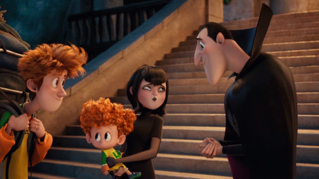

Mavis gostou da ideia da viagem proposta por Drácula, mas não queria deixar Dennis sozinho com seu pai no Hotel Transilvânia. O que ela faz?
- 1 - Decide não ir por medo do que pode acontecer com o Dennis ficando sozinho com Drácula
- 2 - Deixa Dennis ficar sozinho com seu pai com a condição de fazer videochamadas com ela todos os dias